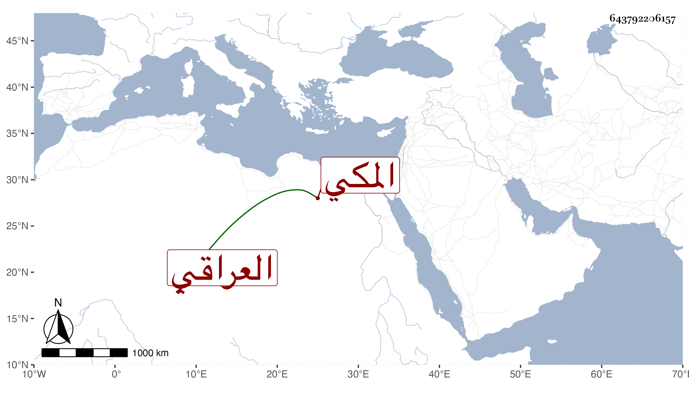

0902Sakhawi.DawLamic.ITO20230111-ara1.EIS1600.643792206157
Biography ID: 643792206157
العراقي نسبة للعراق عبد الرحيم بن الحسين بن عبد الرحمن وابنه الولي أبو زرعة أحمد وابنه التاج عبد الوهاب وابنه علي وإبراهيم بن محمد بن مصلح المكي وابناه أبو بكر ومحمد وابن أولهما عبد الرحمن وابن ثانيهما اسمعيل ويقال لمن عدا عبد الرحيم وإبرهيم ابن العراقي
